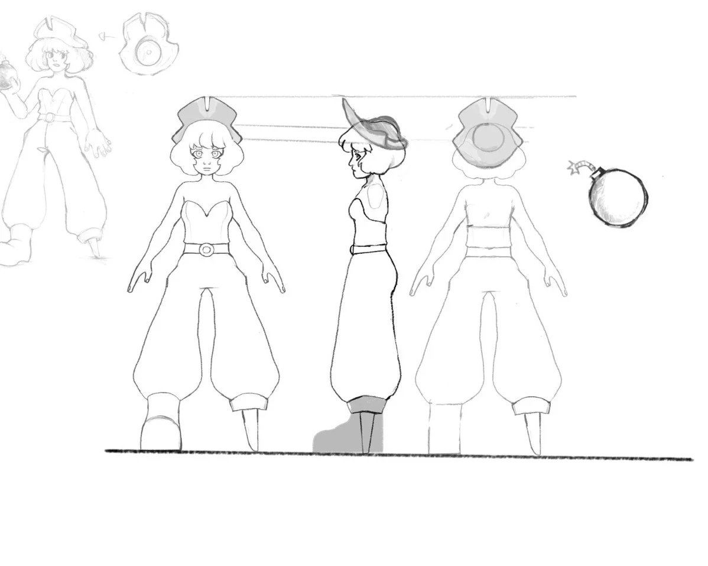

Film de fin d'études 2025
Papy dans le tiroir
Réalisé par Axel Wehbeh et Ludmilla Cheklit — 5 min 19.
Modélisation — Texturing
Cinq objets texturés.
-
biblically accurate angel
-
petite pirate
-
Pirate
-
Projet Figurine Hika March
-
Vidéo texturing
Texturing · Substance · Rendu Cycle
Réalisations en texturing et rendu.
-
Fiole nomad sculpt
-
Vidéo — Substance / Rendu Cycle
Dessins
Mes créations sur Instagram.